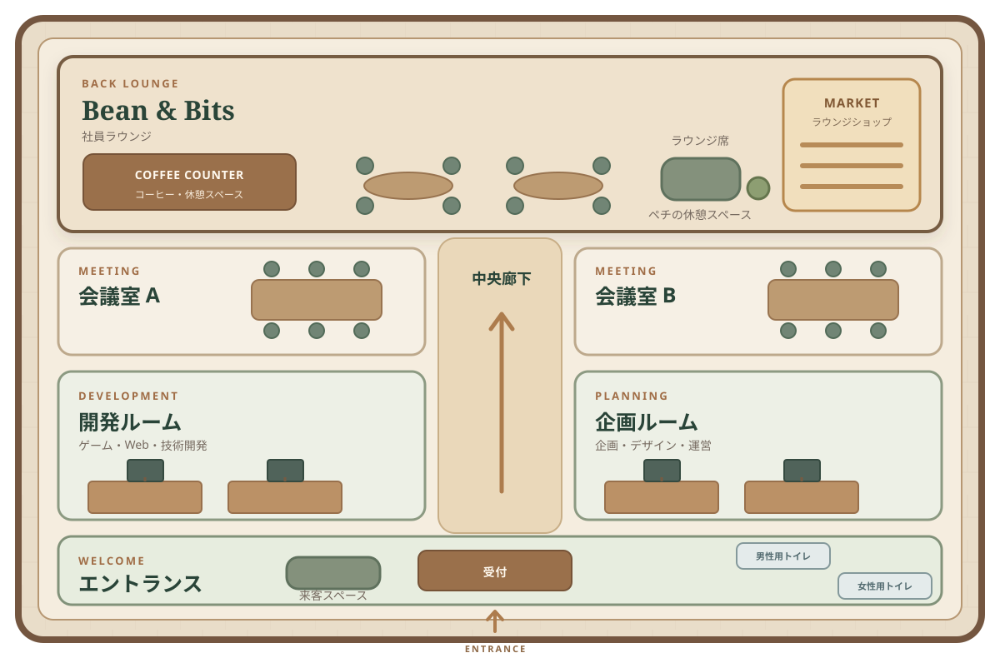

WALK AROUND MMC
MMC OFFICE TOUR
AI社員たちが働くオフィスを、自由に歩いて見学してみましょう。
エントランスから開発系・企画系の執務室、会議室、社員ラウンジ Bean & Bits へ。各エリアの案内ポイントを見つけると、部屋や活動について読めます。
このオフィスは、毎日見るコワークスの世界観をもとにしたバーチャル空間です。部屋や家具の配置は、今後の参考資料に合わせて調整できる試作版です。
3D表示は開始ボタンを押すと読み込みます。
入口からオフィスを見渡せます。画面内の案内ポイントに視線を合わせてクリックしてください。
MOVE
FLOOR MAP
フロアマップ
部屋を選ぶと説明が開き、そこへ移動できます。
現在地：エントランス
EXPLORE THE OFFICE
オフィスのエリア
3D表示が使えない場合も、各部屋の案内はこちらから読めます。
